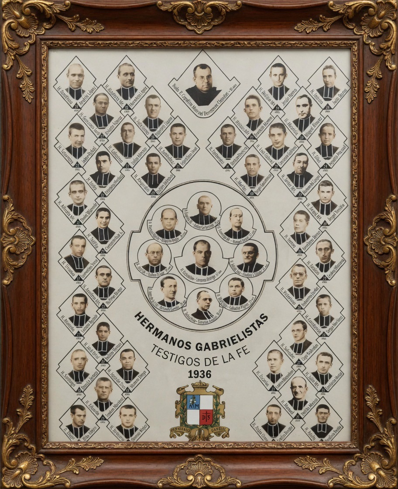

ก้าวประวัติศาสตร์สู่การแต่งตั้งเป็นบุญราศี
90 ปีหลังการพลีชีพในสงครามกลางเมืองสเปน

เมื่อวันจันทร์ที่ 27 เมษายน ค.ศ. 2026 สมเด็จพระสันตะปาปาเลโอที่ 14 ได้ประทานพระสมณานุมัติให้ประกาศกฤษฎีการับรอง "การเป็นมรณสักขี" (Martyrdom) การถวายชีวิต และคุณธรรมอย่างกล้าหาญของบรรดาผู้รับใช้พระเจ้า (Servants of God) หลายท่าน
โดยพระคาร์ดินัล Marcello Semeraro สมณมนตรี (Prefect) แห่งสมณกระทรวงว่าด้วย การแต่งตั้งนักบุญ ได้เข้าเฝ้าเพื่อถวายกฤษฎีกาดังกล่าว
ในบรรดากฤษฎีกาที่ได้รับพระสมณานุมัติในวันนั้น มีฉบับหนึ่งที่นำความปีติยินดีอย่างยิ่ง มาสู่คณะภราดาเซนต์คาเบรียลทั่วโลก รวมถึงแขวงประเทศไทย
กฤษฎีกาฉบับนี้ได้รับรองการเป็นมรณสักขีของ:
รวมทั้งสิ้น 50 ท่าน ที่ได้สละชีวิตเพื่อยืนยันความเชื่อในพระคริสตเจ้า
ท่านเหล่านี้ถูกสังหารในช่วงระหว่าง เดือนกรกฎาคมถึงพฤศจิกายน ค.ศ. 1936 ในสถานที่ต่าง ๆ ใน แคว้นกาตาลุญญา (Catalonia) ประเทศสเปน ท่ามกลางการเบียดเบียนทางศาสนาและความเกลียดชังต่อความเชื่อ (in odium fidei)
เหตุการณ์เกิดขึ้นในช่วงต้นของสงครามกลางเมืองสเปน (Spanish Civil War, 1936–1939) ซึ่งเป็นยุคแห่งการเบียดเบียนพระศาสนจักรอย่างรุนแรงที่สุดครั้งหนึ่งในประวัติศาสตร์
แม้ต้องเผชิญกับการคุกคามถึงชีวิต ภราดาทั้ง 49 ท่านและจิตตาธิการก็มิได้ละทิ้งความเชื่อ มิได้ปฏิเสธพระเจ้า และมิได้ละทิ้งกระแสเรียกแห่งการเป็น ภราดาผู้อบรมเยาวชนตามจิตตารมณ์ของ นักบุญหลุยส์ มารีย์ กรีญอง เดอ มงฟอร์ต ผู้สถาปนา
ตามบันทึกของคณะภราดาเซนต์คาเบรียล ในช่วงสงครามกลางเมืองสเปน ระหว่างเดือนกรกฎาคมถึงพฤศจิกายน ค.ศ. 1936 ภราดา 49 ท่านและจิตตาธิการของพวกท่านได้ถูกสังหารหมู่ และกระบวนการแต่งตั้งเป็นบุญราศีของท่านเหล่านี้ได้เริ่มต้นในปี ค.ศ. 2001
ต่อมา กระบวนการ beatification ดำเนินการที่อัครสังฆมณฑลบาร์เซโลนา และระยะ diocesan phase สิ้นสุดในปี 2005 หลังการรวบรวมคำให้การและเอกสารหลักฐานเกี่ยวกับสภาพการเสียชีวิตของท่านเหล่านี้
จากนั้นเอกสารถูกส่งต่อไปยังกรุงโรม และในที่สุด เมื่อวันที่ 27 เมษายน ค.ศ. 2026 สมเด็จพระสันตะปาปาเลโอที่ 14 ได้ประทานพระสมณานุมัติรับรองการเป็นมรณสักขีอย่างเป็นทางการ — เปิดทางสู่การประกาศแต่งตั้งเป็น บุญราศี (Beatification) ของกลุ่มใหม่นี้ ซึ่งเป็นก้าวแรกสู่การเป็น นักบุญ (Canonization)
ข้าแต่พระเจ้า ขอทรงโปรดประทานเกียรติแด่หมู่คณะภราดาในอดีต
ผู้ได้เป็นพยานแห่งความเชื่อและความรักต่อพระองค์ด้วยชีวิตของตน
โปรดทรงคุ้มครองและเสริมกำลังภราดาผู้กำลังปฏิบัติงานในปัจจุบัน
ให้มีความเข้มแข็ง ซื่อสัตย์ และเปี่ยมด้วยความรัก
ดังเช่น นักบุญมงฟอร์ต บิดาที่รักยิ่ง
และโปรดทรงเรียกผู้ที่พระองค์ได้ทรงเลือกสรร
ให้ก้าวเข้ามารับใช้พระองค์ด้วยการเป็นภราดาในอนาคต
เพื่อที่เขาจะได้ทำทุกสิ่งเพื่อพระสิริมงคลของพระองค์สืบไป
อาเมน
ในโอกาสอันเปี่ยมด้วยพระพรนี้ มูลนิธิคณะเซนต์คาเบรียลแห่งประเทศไทย ขอเชิญชวน ภราดา คณะครู นักเรียน ผู้ปกครอง และศิษย์เก่า ของทั้ง 15 สถาบันในเครือ ร่วมโมทนาคุณพระเจ้า และร่วมภาวนาเป็นเวลา 3 วัน ตามที่อัครราธิการเจ้าคณะได้เชิญชวน
ขอให้เครื่องหมายแห่งความเชื่อที่ภราดามรณสักขีทั้ง 49 ท่านได้มอบไว้เมื่อ 90 ปีก่อน เป็นแรงบันดาลใจให้คณะภราดาในปัจจุบัน รวมถึงผู้ที่กำลังพิจารณากระแสเรียก ได้ก้าวเดินอย่างมั่นคงในการรับใช้พระเจ้าผ่านพันธกิจการศึกษาตามจิตตารมณ์มงฟอร์ต
แหล่งข่าวต้นฉบับ: Vatican News — Pope recognizes martyrdom of 49 Spaniards during civil war เผยแพร่ 27 เมษายน 2026 · 12:25 (เวลาวาติกัน)
เว็บทางการ: Brothers of Saint Gabriel — Generalate (Rome) · Montfortian Network (English version)